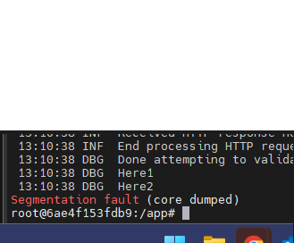

Stupid segfault
I'm embarrassed to say how long I spent trying to debug why a .Net 6 app ran just fine on my local machine but kept failing to complete operations when deployed as a container to a Linux hosted docker container.
The back story is that the app was originally a web service hosted in IIS on a Windows 2012 server, but I decided to dockerize the whole app to make scaling easier for me. All unit tests passed with environment variables of course mocked out or otherwise made unnecessary by stubs and mocks. Integration tests passed as well, but those are only ever run on my local machine since they are long running tests and I don't particularly like the CI/CD pipeline to run integration tests that necessarily depend on data in some environment somewhere... Maybe that's part of my core problem. I might revisit that choice later.
The behavior I was noticing was a 500 Internal server error every time I POSTed to a particular endpoint. The GET endpoints did not appear to have this problem, including the ones that connected to 1 of the 2 SQL server databases necessary for this project.
Upon examining the logs I could find no trace of an exception logged though I had pretty thorough event logging throughout the app including a try/catch surrounding the WebApplication's Run() method too. Upon SSH'ing into the linux machine and examining the docker container's logs I could see it was writing "Starting web host" to stdout immediately after I invoke the failing endpoint. That's the text I write to the console as the first line of my application.
docker logs <container name>At this point I remember that I have my containers configured to restart immediately. And there's nothing in my code that would try to restart the app, so I conclude that it must be Docker starting the container.
docker run --restart=always ...Next I decide I'm going to manually run the app in the container changing the entry point.
docker run -it --entrypoint /bin/bash --publish 80 mydockerhub.net:1234/webApp1:1.2.3.4 -s
dotnet webApp1.dllAfter first shutting down any other instances of the app, I again invoke the failing endpoint and wait to see what will happen. It writes
Well... just what the heck do I do with this? As you may have already guessed, I placed debug/trace log entries like "Here1" around every significant line of code until I found the offending line of code. I originally thought it was a mismatch of SQL client nuget packages (System.Data.SqlClient 4.8.3 vs Microsoft.Data.SqlClient 4.1.0 both of which are used in this project) following my .netcore 3 IIS dotnet app -> .net 6 dockerized app conversion. But after another dev I work with suggested I look at the connection strings, I noticed that the code in that environment around the segfault was using something like the following in the DI:
ServiceBrokerConnectionString=Server=DB-Host-Name;Database=ServiceBroker;Integrated Security=True;MultipleActiveResultSets=True;Connection Timeout=60;TrustServerCertificate=True;Integrated security?!? That made sense in the IIS hosted app that was run by an app pool logged in under a specific AD account. But running as a container in a Linux hosted docker environment, that makes a lot less sense. Obviously I overlooked something in the deployment script when I switched to a dockerized solution. That much I'll own up to. So I change the connection string to something like:
ServiceBrokerConnectionString=Data Source=DB-Host-Name;Initial Catalog=ServiceBroker;User Id=bob;Password=bobHasAnInsecurePasswordAfter running it again, everything runs just fine. The endpoint completes all calls without error. My conclusion: "Integrated security" can cause a segfault with no thrown exceptions and nothing valuable logged when run in a Linux hosted docker environment.
So... what the hell?! Someone should be punched for this. Someone besides me.